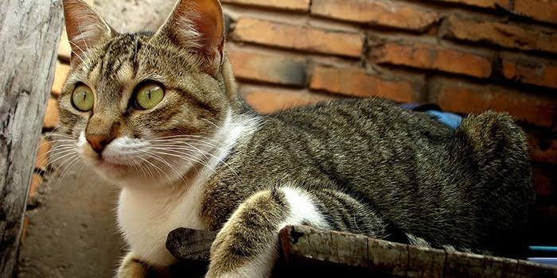
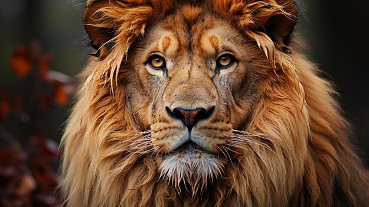
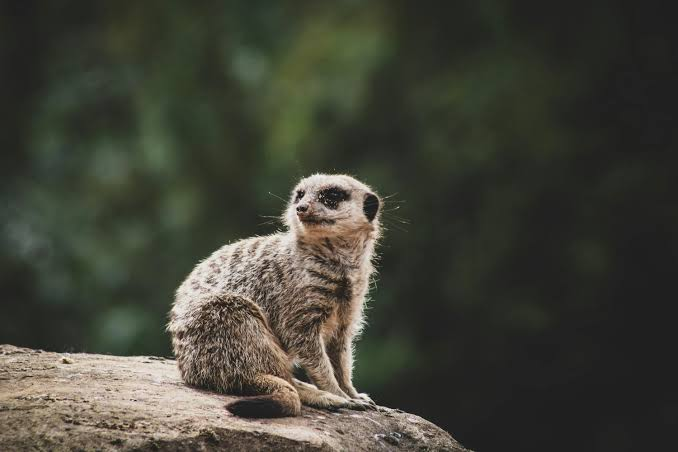
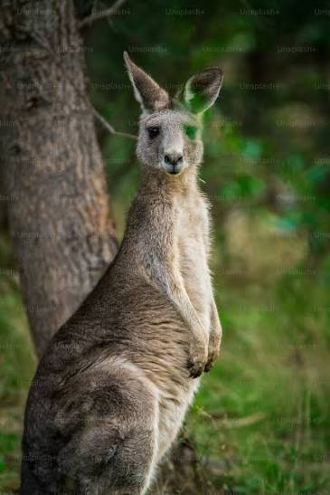
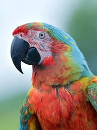

small, meat-eating mammals. They are the only tamed animals in the cat family. They are known for being quiet, clean, and playful. Cats have lived with humans for thousands of years. They were first used to hunt mice and rats. Today, they are popular pets.

Lions (Panthera leo) are powerful, highly social apex predators native to Sub-Saharan Africa and the Gir Forest in India. Renowned as the "king of beasts", they live in family groups called prides and spend up to 20 hours a day resting to conserve energy.

Meerkats are small, social mammals native to the deserts of southern Africa. They belong to the mongoose family. Meerkats are famous for standing tall on their hind legs to watch for danger. They live in close-knit family groups called "mobs" of up to 30 members.

Kangaroos are large, hopping marsupials native to Australia and are the largest living marsupials on Earth. They belong to the family Macropodidae, which translates literally to "big foot". They are globally famous for using their powerful hind legs to hop as their primary method of locomotion.
